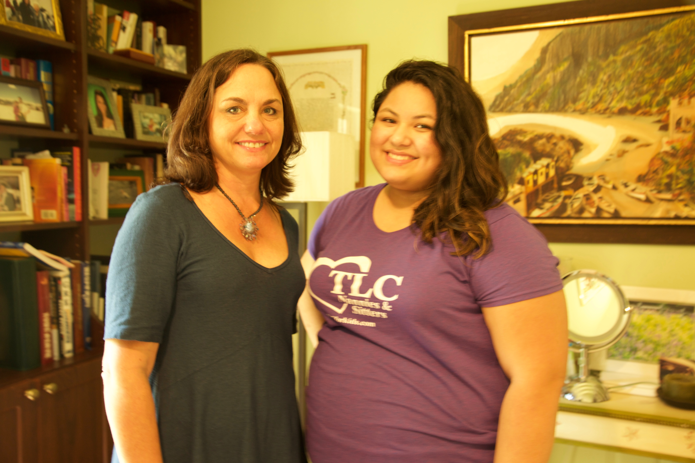
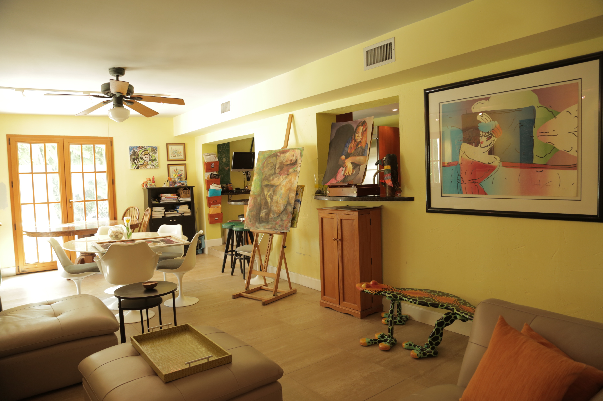

A warrior who wins her battle on breast cancer
“I wanted to be a journalist like you,” Sharon Graff-Radell said, laughing and running her hands through her blond hair. “My first job was working at KPLR-TV in St. Louis. I was a writer and producer at the Promotion Department.”
Sharon, 52, is Director of TLC Family Care, one of the first nanny and childcare agencies in the United States. She founded the company with her sister Stephanie at the age of 22, one year after her graduation.
When Radell was a college student, she wrote a thesis on working women in the 1980s, a period of second-wave feminism . At that time, educated women in the United States started to make job gains in white-collar professions. They became doctors, lawyers, managers and CEOs. The rise of a woman’s status in the workforce in this country made Radell realize that there should be some infrastructure to facilitate women’s responsibilities at home.
“Generations ago, people had their family around, their mothers, grandmothers and everybody was there to help them,” she said. “But in this day and age, people are all over the place. They don’t have the support they need, or their grandparents are working.”
Go with your gut instinct
Radell graduated from college in 1984, and the idea of TLC germinated when she was at the TV station. She said, “I just had these strong feelings that ‘God, something that needed to be done.’ The next day I started to figure out how to do this business. It was exciting because I was the pioneer in this country, nobody was doing it.”
In 1985, TLC was born, and Radell received hundreds of requests for nannies within a month. During an hour talk with Radell, her phone rang nearly every ten minutes. “I am sorry, I will have a meeting at 3 p.m.,” she apologized.
She credits her success to her husband Gregg Radell, who has always been an adviser in her career, and her sister who is also a partner in the company.

Sharon Radell with her husband Greff Radell, an adviser in her business. He also provides technical helps in TLC. “Sharon is a driven, dynamic, caring, brilliant and sensitive person,” Greff said.
“There have been times when the children were annoyed because she was constantly drawn back to her work or delayed in family activities because of work emergencies,” Gregg said. “But based on the results I see in our now grown children, the family got the attention it needed to grow, thrive, and maintain a strong love within our family structure.”
“Sharon is a good boss,” her assistant Adriama Zergara, a music major student who studies at Miami Dade College, said. “After my graduation, I will be a full-time assistant for her.”
Sharon Radell and her assistant Adriama Zergara.
“You can do whatever you want if you have the right idea for your career, and you feel confident,” Radell said. “There is no reason that a woman cannot accomplish whatever she wants.”
A battle you can win
When Radell believed she would be blessed with fortune and happiness, life played a cruel joke on her. In 2005, she was diagnosed with href=""breast cancer.
When Radell first called her doctor and asked for the results of her recent breast cancer screening, her doctor said, “It is clear, everything is fine.”
Radell was relaxed and began to pick up her children. An hour later, her cell phone rang. “I probably shouldn’t answer the phone,” Radell said.
The nurse told her in a very apologetic tone that they gave the wrong information, and she should make an appointment with an oncologist.
Radell pulled over her car and started to cry and scream.
Her eight-year-old daughter and ten-year-old son were in the car, watching their mother burst into tears. But the kids were still at an age that they didn’t know what cancer was.
“I was scared; I was terrified,” Radell said. “I was definitely terrified. But once it was out of me, I was fine.”
In her early 20s, she lost a good friend because of breast cancer. But she never thought this would happen to her because she had gone through life feeling invincible and always having a blue sky over her head.
As soon as Radell was diagnosed with breast cancer, she decided to have a mastectomy in an early stage, without any hesitation. However, when the day of her surgery came, Hurricane Katrina swept through Florida and the surgery had to be canceled.
That was the longest two weeks of her life and she had to think about the type of surgery again, whether she needed to remove one breast or two. Radell decided to do a test called oncotype, which can check for the possibility of her cancer recurrence. It was a new technology at that time. At the end, she had a mastectomy. Now, she has been cancer free for 10 years.
“I was scared, but I have never thought that I was going to quit my job,” she said. “I never thought the breast cancer was the end of me. I just thought it was a medical problem that I needed to take care of very quickly because people are counting on me.”
“My first thought was that if anyone could beat this, Sharon could,” her husband said. “I was certain that we would prevail and refused to consider the consequences otherwise.” Radell describes her experience of struggles and triumphs with cancer as a journey. During this journey, she met many women with the same experience. One of these friends who helped Radell go through her journey lost her battle with breast cancer and passed away several years ago. “I was very sad,” she said. “I think about her all the time, I think about her children, her husband and what they must feel right now.”

Sharon Radell plays with her puppy that just woke up from a nap on the couch.
Do not stress yourself too much
Radell’s house is adorned with brightly colored furniture and ornaments. Different kinds of interior decorations make the house look very homey and comfortable. Her daughter’s paintings hang all around the dining room. A brown cat jumps into her arm, trying to find the most confortable place for a nap.
Now, Radell is concerned more about her daughter, Caroline Faye Radell , who is a fine arts and pre-med major at Washington University in St. Louis
. The living room of Sharon Radell’s house, where her daughter’s paintings hang all around. Her daughter, Caroline Faye Radell, is a fine arts and pre-med major student at Washington University in St. Louis.
“She is a talented artist, but she wants to be a doctor,” Radell said. “So, she is deeply stressed. I told her that ‘you have to put your life first, and you should care about your family, friends, relaxing and enjoying, you don’t need to be perfect.’”
Various factors can contribute to breast cancer, but Radell thinks it is the stress that caused her cancer. When she started to run the company, she was anxious about building a website for the company and spent much time on it.
Looking back on all the turns and twists in her life, Radell suggests that the most important thing for a woman is to do what you love and do what you are good at, not what you think that you should be doing.